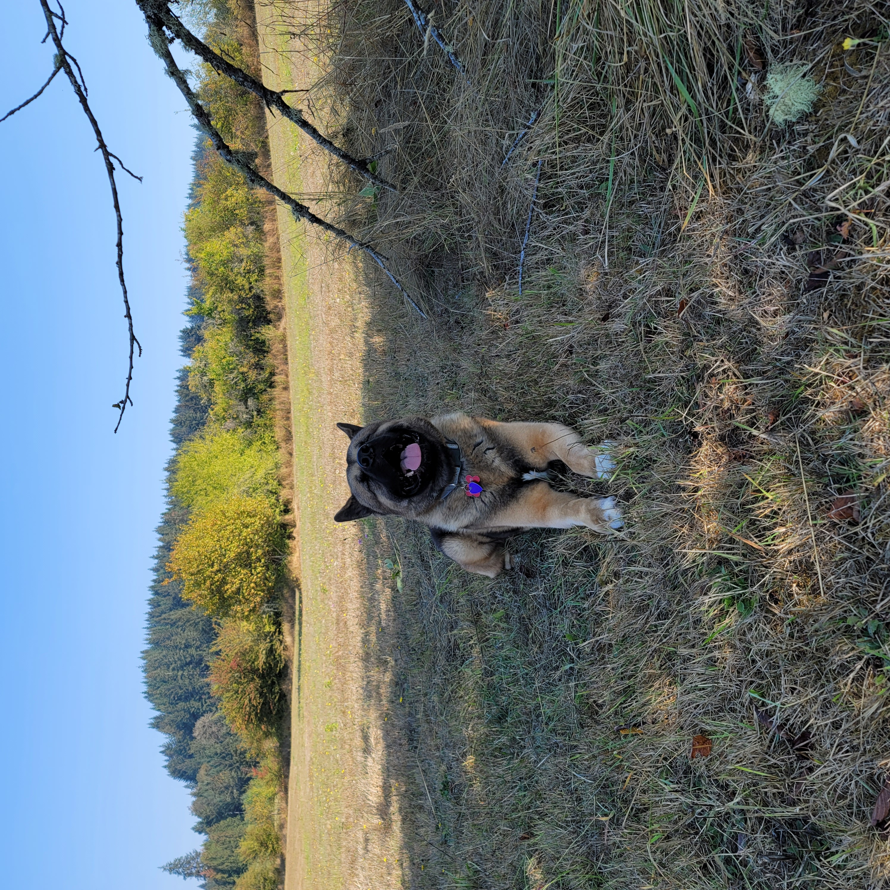
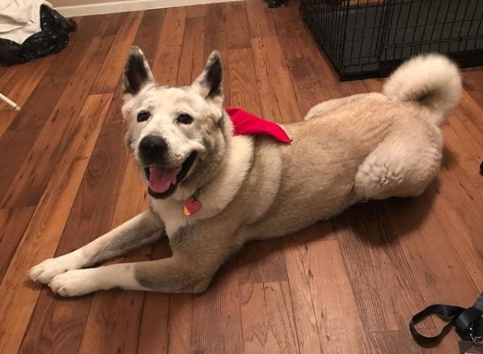

Today, I will be sharing some fun facts about my dogs/children
Koto

- Koto's full name is Makoto Neubauer.
- He is an American Akita.
- He was adopted and was born in Oklahoma.
- He loves to play tug and catch.
- He is sweet/loving and curious.
- His favorite foods are anything meaty.
- Favorite vegetable: sweet potato.
Kya

- Kya's full name is Kaguya Neubauer.
- She was rescued from a shelter and was known to run away from her owners. They ended up not coming for her.
- She is a mixed American Akita.
- She loves to lick bones and play tug.
- She can destory squeaky toys in a day.
- She is very loyal and has not ran away since she became a part of rhte family.
- She is a sassy mischievious girl that likes to sleep and spend time outside.
- Her favorite food is chicken and beef. She unfortunately does not like veggies.